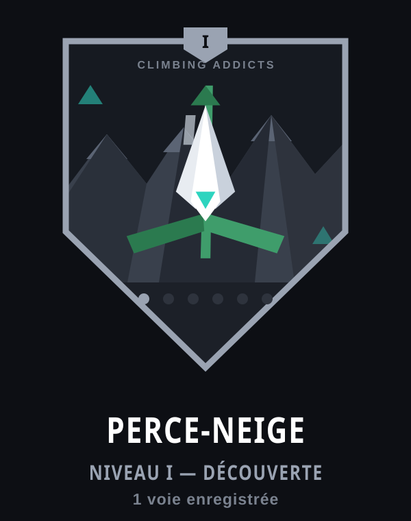
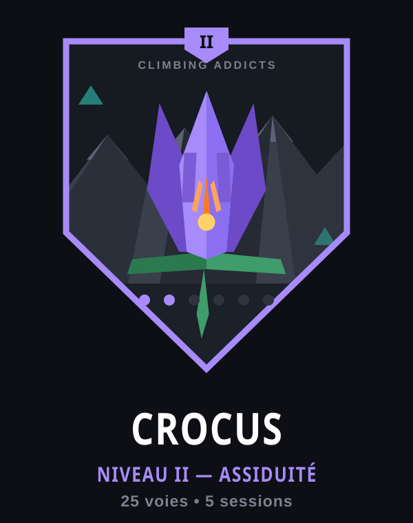
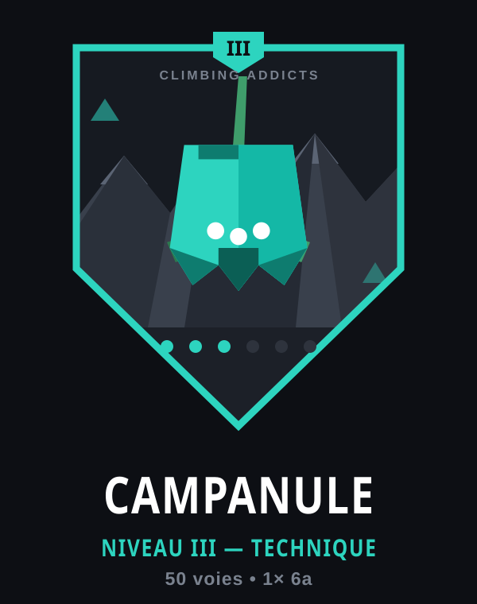
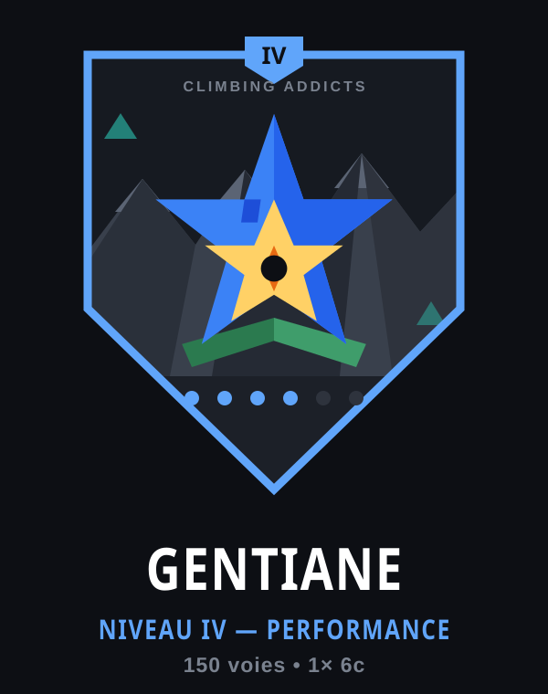
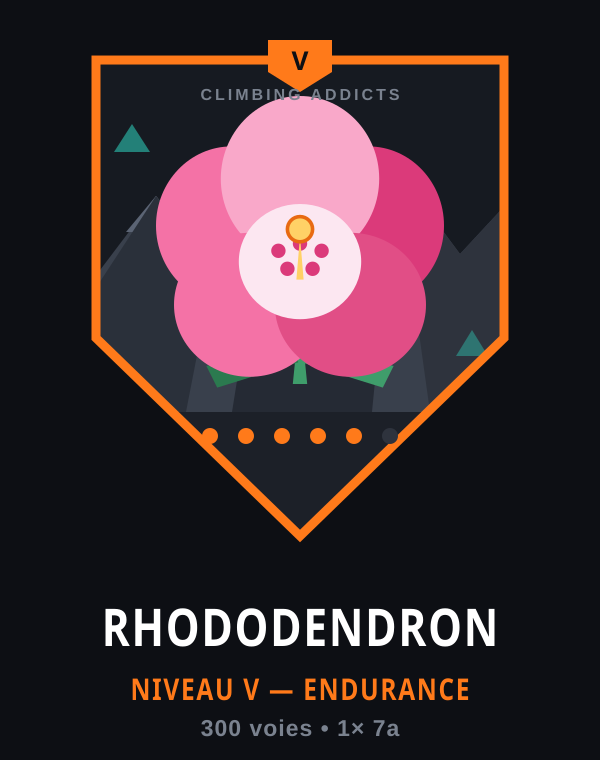
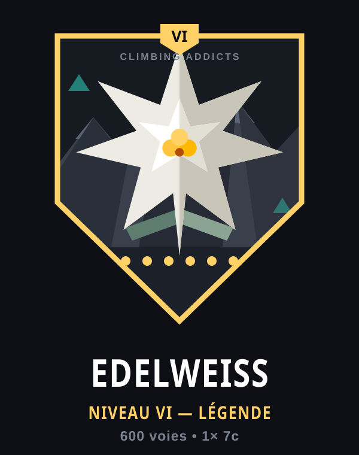

I — Découverte
Perce-Neige
Blanche, première à percer la neige = première voie. 1 voie enregistrée.
6 écussons progressifs, du premier pas en salle jusqu'au mythe. Même base visuelle que ton écusson forme-option-b : fond #161A21, montagnes low-poly, bordure 9px teintée par rareté, typo Archivo Black / Bebas.

Blanche, première à percer la neige = première voie. 1 voie enregistrée.

Violet, revient chaque printemps = régularité. 25 voies • 5 sessions.

Cloche teal, la gestuelle sonne juste. 50 voies • 1× 6a.

Bleue d'altitude, amère et forte. 150 voies • 1× 6c.

Rose des Alpes, buisson qui tient l'hiver. 300 voies • 1× 7a.

Reine protégée des sommets. 600 voies • 1× 7c. Bordure or.
Cumulatif : chaque fleur garde les précédentes. Dots 1→6 sur l'écusson.
| Badge | Couleur bordure | Déblocage | Fichier |
|---|---|---|---|
| I — Perce-Neige | #9AA3B2 gris | 1 voie loggée | badge-01-perce-neige.svg |
| II — Crocus | #A78BFA violet | 25 voies + 5 sessions | badge-02-crocus.svg |
| III — Campanule | #2DD4BF teal app | 50 voies + 1× 6a | badge-03-campanule.svg |
| IV — Gentiane | #60A5FA bleu | 150 voies + 1× 6c | badge-04-gentiane.svg |
| V — Rhododendron | #FF7A1A orange app | 300 voies + 1× 7a | badge-05-rhododendron.svg |
| VI — Edelweiss | #FFD166 or | 600 voies + 1× 7c | badge-06-edelweiss.svg |
Design : écusson 600×760, polygone 96,60 504,60 504,338 300,536 96,338, stroke 9px, médaillon romain en haut, nom + palier en bas. Fleurs en polygones plats 2 tons pour matcher la mascotte. Variante « verrouillée » : passer le stroke et le médaillon en #2E333D et la fleur en opacity:.25.